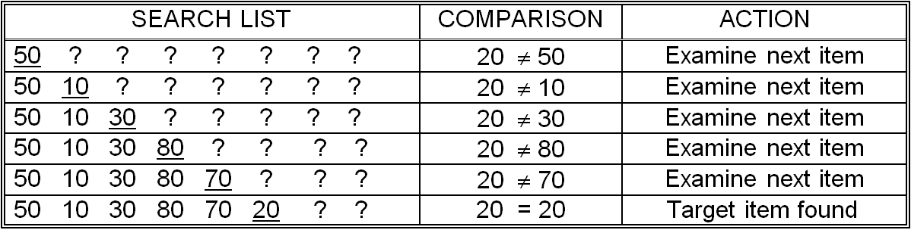

Sequential search works in the following way: starting at the first item in the list, compare each item in the list to the item you are looking for. As soon as you find the item, print “Yes, found it” and then quit. If you reach the end of the list without having found the item, you should print “No, did not find it” and then quit. The algorithm for sequential search is expressed more formally in . Note that step three of the algorithm is reached only in the event that the entire list was searched and the target item not discovered.
illustrates the behavior of the sequential search algorithm given the eight item list (50,10,30,80,70,20,60,40) and a target value of 20. When looking for the value 20, only the first six items of this particular list need to be examined. This is because the target value occurs in the sixth position of the list. If, on the other hand, the target value was 50 and the list remained unchanged, this algorithm would have to examine only one item – the first item in the list. Given the same list and a target value of 90, the algorithm would be forced to examine all eight items to determine that this target does not occur anywhere in the list.
In the previous paragraph, we looked at the behavior of sequential search on a specific list of eight numbers given several different target values. A general description of the algorithm’s efficiency, in terms of the number of items to be searched, would be much more useful. Such a description would allow us to predict the average number of comparisons required to find an arbitrary key given only the size of the list instead of the actual values. In other words, the question we would like answered is “What is the behavior of this algorithm, in general, given an arbitrary target and list of N items?”
Sequential search
Sequential search for the value 20
To begin with, if the target item is not in the list, it will be necessary to look through the entire list to verify this fact. So, for N = 8 items, a search that ends in failure will require N, or 8, comparisons. Let’s say we were executing sequential search on an antique computer that requires 1/1,000 of a second to perform a comparison.[2] In that case, an unsuccessful search of 10,000 items would require 10 seconds.
Now, what if the item is in the list? How many comparisons would be required to find the item? Well, as the above example with eight items showed, it varies. Sometimes the target item will be right at the beginning of the list, so only one comparison is needed to find it. At other times, the target item will be the very last item in the list, and every item must be examined – so for a 10,000 item list, all 10,000 items would be examined.
If you performed lots of searches, and determined the “mean” or “average” number of comparisons required to find a target item that you know to be in the list, you would find that, on average, you had to scan about half the list. This should not be surprising, since the “good” cases, where the target is at the front of the list, and the “bad” cases, where the target is at the end of the list, tend to cancel each other out over multiple searches. Thus, on average, successful sequential searches of an N item list require ½ N comparisons.
So, given a list of 10,000 items, on average 5,000 comparisons are required to find an item that is in the list. If the algorithm were implemented on a computer that could process one comparison in 1/1,000 of a second, 5 seconds would be required, on average, for the search operation to complete. This assumes that the target item is in the list. Remember that it will take exactly 10,000 comparisons (or 10 seconds) to verify that a given number is not in the list. Also remember that the actual amount of time required by any particular search of this list will vary on our antique computer from 1/10,000 second all the way up to 10 seconds, since there is no way to predict where (or even whether) the target item will be found in the list.
While an average search time of 5 seconds for 10,000 items may seem pretty impressive for an antique computer, consider that using the same assumption of 1,000 comparisons per second, it would take about 42 hours, on average, to retrieve a social security record, given a valid social security number; and 83 hours (3 ½ days!) to determine that an input number was not valid. This is because there are about 300 million people in the United States, most of whom have a social security number. On average, it would be necessary to look through 1/2 of these (about 150 million records). This would take 150,000 seconds, almost 42 hours. Clearly, there must be better search algorithms.
To summarize, a sequential search of an N item list requires N comparisons to determine that a number is not in the list. If the number is in the list, sequential search can, on average, verify this fact using only ½ N comparisons. Regardless of this fact, the most precise statement that can be made about any particular sequential search of N items is that it will require somewhere between 1 and N comparisons. These ideas can be expressed succinctly by the following three equations:
Minimum number of sequential search comparisons = 1
Maximum number of sequential search comparisons = N
Average number of sequential search comparisons for successful searches = ½ N
Exercises for
Footnotes
[2] The value of 1,000 comparisons per second was chosen for illustrative purposes only. Modern computers are orders of magnitude faster. In we will switch to a computer with a somewhat more realistic processing speed.